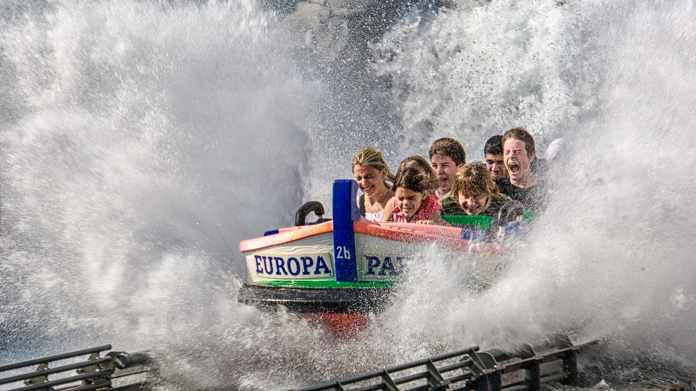

Colourful city of mehsana
Gujarat is one of the best tourist destinations of India. In that, Mehsana is the glittering jewel of tourism which displays many historical monuments in its arena. Its excavation sites and historical monuments reveal that this is an ancient town of India. In eleventh century, this place flourished with ample artistic places and historical monuments under the rule of Solanki Dynasty. Those rulers were very keen on spreading wonderful architecture along with religious spirituality. Hence they constructed plethora of monuments around this region.
Tourism places to visit in Mehsana
There are many such evidences of chronology standing tall here though many of them are demolished by foreign invaders. After that Rajputs and Jain had great impact on this region whose proof are found in the form of tourist attractions in Mehsana. After independence Mehsana stayed as a part of Bombay province, but in separation of Gujarat, it became the district headquarters in this state. Mehsana tourism has flourished after this separation and now it is one of the leading tourism spots of India
-
-
-
-
-
SMVS Shree swaminarayan Mandir
-
Prominent Places to Visit in Mehsana
Today, Mehsana is prime location of tourism well versed with all infrastructural requirements to attract huge flow of tourist. Its tourism consists of Indus valley civilization sites, historical structures, ancient temples, natural habitat, wild life sanctuary, museums, and other such places. Excavation sites are most attractive places of tourism to attract people who have penchant for visiting prehistoric sites. Followers of Hinduism and Jainism are prominent travelers of this place to watch significant temples of Mehsana.
Shopping in Mehsana
Shopping in Mehsana is quite wonderful experience for travelers. Handicrafts found in this region are famous all around. Hence tourists must take tour of shopping places in and around Mehsana to collect some of the magnificent art and handicrafts of rural India. If anyone find any fair happening around the city, then it is must visit place for travelers. Craftsman and weavers from adjoining cities come in these fairs to exhibit their fine handicrafts. For modern people, there are few commercial malls and complexes setup in the city which can be good place to hang around and take collects of local market.
Confused finding your dream destination ?
we find many people struggling to decide which place to visit , worry no
more .
Feel free to contact us and book a personal turist guide, you can get
contact information under about us page